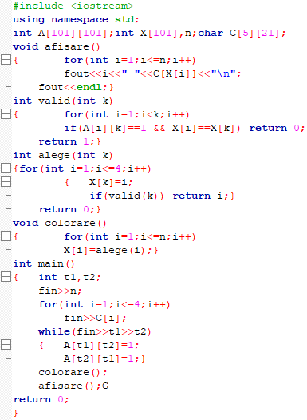
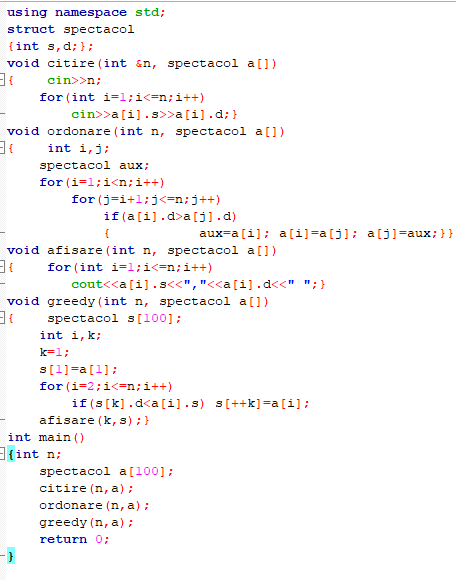
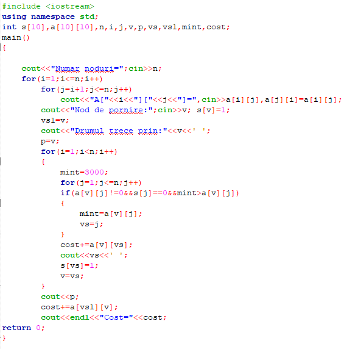

| Pagina principala | Metoda backtracking | Metoda triarii | Metoda greedy |
|---|
Algoritmii greedy formează o paradigmă algoritmică care urmează euristica rezolvării de probleme care face la nivel local alegerea optimă pentru fiecare etapă în speranța de a găsi un optim global. În multe probleme, o strategie greedy produce, în general, o soluție optimă, dar cu toate acestea o euristică greedy poate produce la nivel local soluții optime care aproximează o soluție optimă globală într-un timp rezonabil.
Fiind data o harta cu n tari, se cere o solutie de colorare a hartii, utilizand cel mult patru culori, astfel incat doua tari ce au frontiera comuna sa fie colorate diferit. Este demonstrat faptul ca sunt suficiente numai patru culori pentru ca orice harta sa poata fi colorata.
O persoana are un rucsac cu care poate transporta o greutate maxima g. Persoana are la dispozitie n obiecte pentru care stie greutatea si castigul obtinut daca transporta obiectul. Fiecare obiect poate fi transportat integral sau taiat. Sa se precizeze ce obiecte alege persoana si in ce proportie le ia astfel incat castigul total sa fie maxim si sa nu se depaseasca greutatea maxima a rucsacului.
Un comis-voiajor pleaca dintr-un oras, trebuie sa viziteze un numar de orase si sa nu se intoarca in orasul de unde a plecat cu efort minim. Orice oras i este legat printr-o sosea de orice alt oras j printr-un drum de A[i,j] kilometri.Se cere traseul pe care trebuie sa-l urmese comis-voiajorul, astfel incat sa parcurga un numar minim de kilometri.
